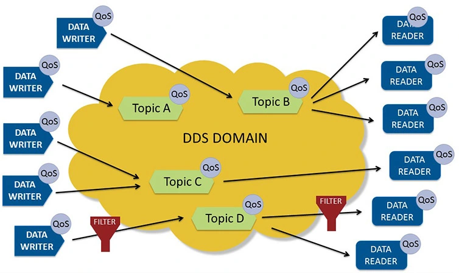

DDS通信接口
Unitree SDK 介绍
unitree_sdk2 是在DDS上做了一层封装，支持 DDS 组件的 Qos 配置，对应用开发提供简单的封装接口，并实现了基于 DDS Topic 的 RPC 机制，适用于在 G1 内部进程间以及 G1 外部与内部的进程间通过发布/订阅和请求/响应两种方式完成不同场景下的数据通信。
DDS 简介
DDS(全称 Data Distribution Service 数据分发服务)，是一个中间件，由OMG发布的分布式通信规范，采用发布/订阅模型，提供多种QoS服务质量策略，以保障数据进行实时、高效、灵活地分发，可满足各种分布式实时通信应用需求。

(图片来源 https://www.dds-foundation.org)
说明：
unitree_sdk2 安装配置教程，本文不再赘述，请查阅 《快速开发》。
接口说明
unitree::robot::ChannelFactory
unitree::robot::ChannelFactory 在unitree::robot 下，提供了一个ChannelFactory 的单例，用于创建基于 DDS Topic 的 Channel。ChannelFactory 在使用前必须调用初始化接口，以对底层的 DDS 配置进行初始化，调用方法如
unitree::robot::ChannelFactory::Instance()->Init(0)
各接口描述如下：
| 函数名 | Instance |
|---|---|
| 函数原型 | static unitree::robot::ChannelFactory* unitree::robot::ChannelFactory::Instance() |
| 功能概述 | 获取单例静态指针。 |
| 参数 | 无 |
| 返回值 | unitree::robot::ChannelFactory 单例静态指针。 |
| 备注 |
| 函数名 | Init |
|---|---|
| 函数原型 | void Init(int32_t domainId, const std::string& networkInterface = "", bool enableSharedMemory = false) |
| 功能概述 | 指定 Domain Id, 网卡名、是否使用共享内存三个初始化参数，对ChannelFactory 初始化。 |
| 参数 | domainId：默认构造DdsParticipant的domain id； networkInterface：指定网卡名，默认为空； enableSharedMemory：是否使用共享内存，默认为 false。 |
| 返回值 | 无 |
| 备注 | 如果 networkInterface 为空，会生成自动选择网卡配置； 在 G1 外部开发应用程序时，enableSharedMemory 需设置为 false。 |
| 函数名 | CreateSendChannel |
|---|---|
| 函数原型 | template |
| 功能概述 | 指定 name，创建一个指定消息类型为 MSG 的用来发送数据的 Channel。 |
| 参数 | name：Channel 名。 |
| 返回值 | template |
| 备注 |
| 函数名 | CreateRecvChannel |
|---|---|
| 函数原型 | template |
| 功能概述 | 指定 name，创建一个指定消息类型为 MSG 的用来接收数据的 Channel。 |
| 参数 | name：Channel 名； callback：消息到达时的回调函数； queuelen：消息缓存队列的长度；如果长度为 0，不启用消息缓存内列。 |
| 返回值 | template |
| 备注 | 如果消息在回调函数中处理耗时较长，建议启用消息缓存队列，避免 DDS 回调线程阻塞。 |
| 函数名 | Release |
|---|---|
| 函数原型 | void Release() |
| 功能概述 | 释放 ChannelFactory 静态资源。 |
| 参数 | 无 |
| 返回值 | 无 |
| 备注 | unitree::robot::ChannelFactory::Instance()->Release() |
unitree::robot::ChannelPublisher
unitree::robot::ChannelPublisher 类实现了指定类型的消息发布功能。
| 类名 | 构造与析构 |
|---|---|
| template |
explicit ChannelPublisher(const std::string& channelName); ~ChannelPublisher() |
注意：
unitree::robot::ChannelPublisher 构造时使用了unitree::robot::ChannelFactory::Instance()->CreateSendChannel
| 函数名 | InitChannel |
|---|---|
| 函数原型 | void InitChannel() |
| 功能概述 | 初始化 Channel，准备用于发送消息。 |
| 参数 | 无 |
| 返回值 | 无 |
| 备注 |
| 函数名 | CloseChannel |
|---|---|
| 函数原型 | void CloseChannel() |
| 功能概述 | 关闭 Channel。 |
| 参数 | 无 |
| 返回值 | 无 |
| 备注 |
| 函数名 | Write |
|---|---|
| 函数原型 | bool Write(const MSG& msg) |
| 功能概述 | 发送指定类型的消息。 |
| 参数 | msg：发送 类型为 MSG 的消息。 |
| 返回值 | true：发送成功； false：发送失败。 |
| 备注 |
unitree::robot::ChannelSubscriber
unitree::robot::ChannelSubscriber 实现了指定类型的消息订阅功能。
| 类名 | 构造与析构 |
|---|---|
| template |
explicit ChannelSubscriber(const std::string& channelName); ~ChannelSubscriber() |
注意：
unitree::robot::ChannelSubscriber 构造时使用了unitree::robot::ChannelFactory::Instance()->CreateSendChannel
| 函数名 | InitChannel |
|---|---|
| 函数原型 | void InitChannel(const std::function |
| 功能概述 | 初始化 Channel，准备用于接收或处理消息。 |
| 参数 | callback：消息到达时的回调函数； queuelen：消息缓存队列的长度；如果长度为 0，不启用消息缓存内列。 |
| 返回值 | 无 |
| 备注 | 如果消息在回调函数中处理耗时较长，建议启用消息缓存队列，避免 DDS 回调线程阻塞。 |
| 函数名 | CloseChannel |
|---|---|
| 函数原型 | void CloseChannel() |
| 功能概述 | 关闭 Channel。 |
| 参数 | 无 |
| 返回值 | 无 |
| 备注 |
| 函数名 | GetLastDataAvailableTime |
|---|---|
| 函数原型 | int64_t GetLastDataAvailableTime() |
| 功能概述 | 获取最后一次收到消息的时间。 |
| 参数 | 无 |
| 返回值 | Channel 未初始化时返回-1；否则返回从系统启动开始从 0 单调递增的时间戳，精确到微秒。 |
| 备注 |
机器人 Service Client 接口
机器人内部的多个服务组件通过 RPC Client 的方式对外提供部分功能接口，用户能方便的通过 Client 的接口实现对
机器人 的控制或数据获取。
部分通用错误码列表：
| 错误号 | 错误描述 | 备注 |
|---|---|---|
| 3001 | 未知错误 | 客户端/服务端返回 |
| 3102 | 请求发送错误 | 客户端返回 |
| 3103 | API 未注册 | 客户端返回 |
| 3104 | 请求超时 | 客户端返回 |
| 3105 | 请求与响应数据不匹配 | 客户端返回 |
| 3106 | 响应数据无效 | 客户端返回 |
| 3107 | 租约无效 | 客户端返回 |
| 3201 | 响应发送错误 | 发生在服务端,不会返回到客户端 |
| 3202 | 服务端内部错误 | 服务端返回 |
| 3203 | API 在服务端未实现 | 服务端返回 |
| 3204 | API 参数错误 | 服务端返回 |
| 3205 | 请求被拒绝 | 服务端返回 |
| 3206 | 租约无效 | 服务端返回 |
| 3207 | 租约已存在 | 服务端返回 |
部分客户端通用接口描述：
| 函数名 | Init |
|---|---|
| 函数原型 | void Init() |
| 功能概述 | 客户端初始化，完成客户端 API 注册等逻辑。 |
| 参数 | 无 |
| 返回值 | 无 |
| 备注 |
| 函数名 | SetTimeout |
|---|---|
| 函数原型 | void SetTimeout(float timeout) |
| 功能概述 | 设置 RPC 请求超时时间。 |
| 参数 | timeout：单位秒。 |
| 返回值 | 无 |
| 备注 | 如未设置超时，默认超时时间为 1 秒。 |
| 函数名 | WaitLeaseApplied |
|---|---|
| 函数原型 | void WaitLeaseApplied() |
| 功能概述 | 申请租约，函数会阻塞至申请到租约。 |
| 参数 | 无 |
| 返回值 | 无 |
| 备注 | 只在启用了租约时有效。 |
| 函数名 | GetApiVersion |
|---|---|
| 函数原型 | const std::string& GetApiVersion() |
| 功能概述 | 获取客户端 API 版本。 |
| 参数 | 无 |
| 返回值 | 返回客户端 API 版本。 |
| 备注 |
| 函数名 | GetApiVersion |
|---|---|
| 函数原型 | const std::string& GetServerApiVersion() |
| 功能概述 | 获取服务端 API 版本。 |
| 参数 | 无 |
| 返回值 | 返回服务端 API 版本。 |
| 备注 |
消息发布示例
例程路径： unitree_sdk2/example/helloworld/publisher.cpp
#include <unitree/robot/channel/channel_publisher.hpp>
#include <unitree/common/time/time_tool.hpp>
#include "HelloWorldData.hpp"
#define TOPIC "TopicHelloWorld"
using namespace unitree::robot;
using namespace unitree::common;
int main()
{
/*
* Init with defalue domain 0.
*/
ChannelFactory::Instance()->Init(0);
/*
* New ChannelPublisherPtr
*/
ChannelPublisherPtr<HelloWorldData::Msg> publisher = ChannelPublisherPtr<HelloWorldData::Msg>(new ChannelPublisher<HelloWorldData::Msg>(TOPIC));
/*
* Init channel
*/
publisher->InitChannel();
while (true)
{
/*
* Send message
*/
HelloWorldData::Msg msg(unitree::common::GetCurrentTimeMillisecond(), "HelloWorld.");
publisher->Write(msg);
sleep(1);
}
return 0;
}
消息订阅示例
例程路径： unitree_sdk2/example/helloworld/subscriber.cpp
#include <unitree/robot/channel/channel_subscriber.hpp>
#include "HelloWorldData.hpp"
#define TOPIC "TopicHelloWorld"
using namespace unitree::robot;
using namespace unitree::common;
void Handler(const void* msg)
{
const HelloWorldData::Msg* pm = (const HelloWorldData::Msg*)msg;
std::cout << "userID:" << pm->userID() << ", message:" << pm->message() << std::endl;
}
int main()
{
/*
* Init with defalue domain 0.
*/
ChannelFactory::Instance()->Init(0);
/*
* New ChannelSubscriberPtr
*/
ChannelSubscriberPtr<HelloWorldData::Msg> subscriber = ChannelSubscriberPtr<HelloWorldData::Msg>(new ChannelSubscriber<HelloWorldData::Msg>(TOPIC));
/*
* Init channel
*/
subscriber->InitChannel(std::bind(Handler, std::placeholders::_1), 1);
sleep(5);
/*
* Close channel
*/
subscriber->CloseChannel();
std::cout << "reseted. sleep 3" << std::endl;
sleep(3);
/*
* Init channel use last input parameter.
*/
subscriber->InitChannel();
/*
* Loop wait message.
*/
while (true)
{
sleep(10);
}
return 0;
}
G1 常用TOPIC 列表
| TopicName | 类型组 | 消息类型定义 | Info |
|---|---|---|---|
| rt/dex3/left/state | hg | HandState_ | 获取左灵巧手反馈状态-低频模式 |
| rt/lf/dex3/left/state | hg | HandState_ | 获取左灵巧手反馈状态 |
| rt/dex3/left/cmd | hg | HandCmd_ | 控制左灵巧手 |
| rt/dex3/right/state | hg | HandState_ | 获取左灵巧手反馈状态 |
| rt/lf/dex3/right/state | hg | HandState_ | 获取右灵巧手反馈状态-低频模式 |
| rt/dex3/right/cmd | hg | HandCmd_ | 控制右灵巧手 |
| rt/lf/mainboardstate | hg | MainBoardState_ | 获取主板反馈信息 |
| rt/lowstate | hg | LowState_ | 获取底层反馈信息(IMU、电机等) |
| rt/lf/lowstate | hg | LowState_ | 获取底层反馈信息(IMU、电机等)-低频模式 |
| rt/lowcmd | hg | LowCmd_ | 底层控制命令 |
| rt/lf/bmsstate | hg | BmsState_ | 获取电池反馈数据 |
| rt/odommodestate | go2 | IMUState_ | 获取里程计信息 |
| rt/lf/odommodestate | go2 | IMUState_ | 获取里程计信息-低频模式 |
| rt/lf/secondary_imu | hg | IMUState_ | 获取机身IMU数据-低频模式 |
| rt/secondary_imu | hg | IMUState_ | 获取机身IMU数据 |
注意
我们不直接提供idl文件，而是提供经由Cyclone DDS的idlc组件编译好的消息定义文件,参考如下： 1. Uintree-sdk2 IDL 1. PythonSDk2 IDL 1. ROS2 MSG